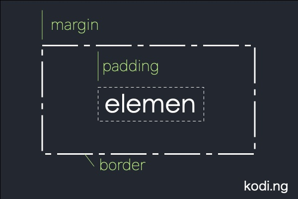

TEXT
Ini adalah contoh penulisan menggunakan CSS
nandoperdaku p
BAB : Warna
Saya di RGB in
hitam
Hijau
BAB : Box
Contoh garis border
Border solid = lurus
Border dotted = titik titik
Border dashed = garis terpisah
Border double = ada dua border seperti kotak.
Border groove
Border ridge
Border Inset.
Border Outset.
Tanpa Border.
Border tesembunyi.
Border campuran.
Aku adalah tag p dengan border atas
saya top solid di css sebelah
Lengkungan nih kan
Aku adalah tag p dengan border 5px
Aku adalah tag p dengan border 10px
Aku adalah tag p dengan border penuh warna
Aku adalah tag p
gambaran box yang berisi padding, margin, dan border :

Aku dikasih padding dong
Aku padding dengan 4 arah
Aku padding dengan semuanya
#css w3schools
Saya kombinasi dari tengah dan gede
referensi Warna CSSaku memakai background dengan opacity
Contoh border-width
Hijau Solid
Biru Dotted
Individual Side Border
Bisa juga seperti ini
Bagian 1
Bagian 2
A dotted outline
A dashed outline
A solid outline
A double outline
A groove outline. The effect depends on the outline-color value.
A ridge outline. The effect depends on the outline-color value.
An inset outline. The effect depends on the outline-color value.
An outset outline. The effect depends on the outline-color value.
Outline width
Outline ringkas
Outline offset
contoh align-last. a i u ala desa desu a i u ala desa desu. a i u ala desa desu a i u ala desa desua i u ala desa desu. a i u ala desa desua i u ala desa desua i u ala desa.
contoh pakai direction. a i u ala desa desu a i u ala desa desu. a i u ala desa desu a i u ala desa desua i u ala desa desu. a i u ala desa desua i u ala desa desua i u ala.
sebuah gambar dari NP
contoh text decoration
contoh shorthand text decoration
link tanpa garis nandoperd
Contoh Text Transform
Contoh Text Spacing. Contoh Text Spacing Contoh Text Spacing Contoh Text Spacing Contoh Text Spacing Contoh Text Spacing. Contoh Text Spacing Contoh Text Spacing Contoh Text Spacing. Contoh Text Spacing Contoh Text Spacing Contoh Text Spacing Contoh Text Spacing Contoh Text Spacing.
text shadow
Ini tulisan memakai font serif
Ini tulisan memakai font sans-serif
Ini tulisan memakai font monospace
Ini tulisan memakai font cursive
Ini tulisan memakai font fantasy
Ini tulisan memakai font variant small
Font responsive menggunakan font size viewport
Contoh font sofia punyanya google font
Contoh font Audiowide punyanya google font
Contoh font Trirong punyanya google font
Contoh font Audiowide dengan style tambahan
Contoh font Audiowide dengan tambahan efek
contoh shorthand font